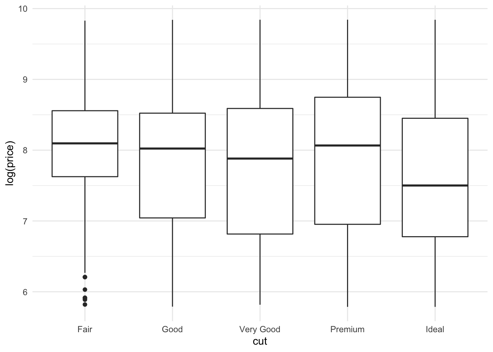
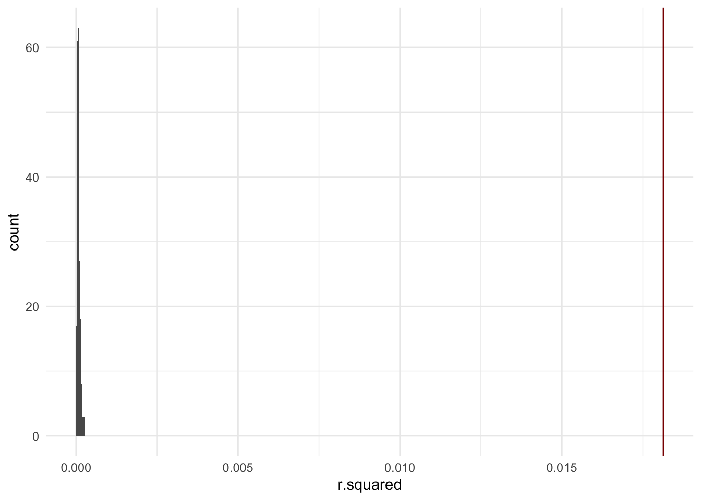

library(alr4) #for data
library(tidyverse) #for plotting and summarizing
library(ggridges) #for ridge plots
library(ggmosaic) #for mosaic plots
library(moderndive) #for nice model output
library(broom) #for nice model output
library(infer) #for making inferences about models
theme_set(theme_minimal()) #changes the theme of ggplots to theme_minimal, my personal favorite
Let’s look at the diamonds data from the tidyverse library. We are interested in testing if there is a relationship between cut and log(price).
diamonds_new <- diamonds %>%
mutate(cut = fct_relevel(fct_inorder(cut, ordered = FALSE),
"Fair", "Good", "Very Good", "Premium"))
diamonds_new %>%
ggplot(aes(x=cut, y=log(price))) +
geom_boxplot() +
theme_minimal()

And we could fit a model:
lm_cut <- lm(log(price) ~ cut,
data=diamonds_new)
tidy(lm_cut)
The hypothesis test we conduct to test the significance of cut overall is:
\[
H_0: \beta_1 = \beta_2 = \beta_3 = \beta_4 = 0 \\
H_a: \text{at least one of the } \beta_i \ne 0
\]
In general, this is called an “F-Test” and is:
\[
H_0: \beta_{k+1} = \beta_{k+2} = ... = \beta_{k+p} = 0 \\
H_a: \text{at least one of the } \beta_i \neq 0,
\]
which we can think of as testing if at least one of the variables is “useful” in the model. Notice that this test is a little trickier than the other hypothesis tests we’ve been doing because we’re dealing with more than one coefficient. We’d like to be able to summarize our results to one number in order to compare what we’re seeing in our data to what we’d expect when the null hypothesis is true.
Using “theory”, ie. R output
There is a statistic we can use, \(F\), that has a well-defined theoretical distribution under \(H_0\) (ie. when \(H_0\) is true). I have written its formula below. I will not talk about the detail of it, but notice that it is a function of \(R^2\).
\[
F = \frac{\frac{R^2}{p}}{\frac{1 - R^2}{n-(p+1)}}
\]
We can use the anova(), AN(alysis) O(f) VA(riance), function in R to test the desired hypothesis. First, we need the “null” model, which in this case is a model with no variables. The p.value is the p-value for the test we described above. Caution: the two models must be “nested” models in order to use ANOVA. That means that one model is a subset of the other, or that the variables from the smaller model are all in the larger model.
null_mod <- lm(log(price) ~ 1, data = diamonds_new)
anova(null_mod, lm_cut) %>% tidy()
Using \(R^2\) and simulation
We could also use a simulation method to compute a p-value. One number we could use to summarize the relationship is \(R^2\).
YOUR TURN!
What would you expect the \(R^2\) to be if there were no relationship?
We can extract the \(R^2\) from the model. This is the actual \(R^2\) from our sample of data. I have also saved this into a variable called r_squared_actual.
glance(lm_cut) %>% select(r.squared)
r_squared_actual <- glance(lm_cut) %>% select(r.squared) %>% pull()
Now, just like when we had a quantitative variable, we can break the relationship between cut and log(price). Below is one example. Note that I did NOT set a seed (set.seed) at the top, so you will get a different answer when you run it on your computer. Try running it a few times. What values of \(R^2\) do you see?
mod_no_relationship <- lm(sample(log(price)) ~ cut,
data=diamonds_new)
tidy(mod_no_relationship)
glance(mod_no_relationship) %>% select(r.squared)
Now, let’s use R to help us do this many times (200 seems good enough) and keep track of the \(R^2\) each time. (This takes a bit of time since there’s so much data).
set.seed(100)
r_squared <- diamonds_new %>%
rep_sample_n(size = 53940, replace = FALSE, reps = 200) %>%
group_by(replicate) %>%
do(lm(sample(log(price)) ~ cut, data = .) %>% glance()) %>%
ungroup() %>%
select(replicate, r.squared)
r_squared
Now, let’s plot these in a histogram.
r_squared %>%
ggplot(aes(x=r.squared)) +
geom_histogram(bins = 500) +
geom_vline(xintercept = r_squared_actual, color="darkred")

YOUR TURN!
How would you describe the distribution? How could we calculate a p-value?
Adding more variables to the model
Now, what if we want to test the significance of a categorical variable, with other variables already in the model? For example,
lm_more <- lm(log(price) ~ cut + carat,
data=diamonds_new)
tidy(lm_more)
YOUR TURN!
Write out your hypotheses and use the anova() function to conduct the test.
lm_carat <- lm(log(price) ~ carat, data = diamonds_new)
anova(lm_carat, lm_more) %>% tidy()
LS0tCnRpdGxlOiAiSHlwb3RoZXNpcyB0ZXN0aW5nIHdpdGggY2F0ZWdvcmljYWwgdmFyaWFibGVzIgpvdXRwdXQ6CiAgaHRtbF9kb2N1bWVudDoKICAgIHRvYzogdHJ1ZQogICAgdG9jX2Zsb2F0OiB0cnVlCiAgICBkZl9wcmludDogcGFnZWQKICAgIGNvZGVfZG93bmxvYWQ6IHRydWUKLS0tCgpgYGB7ciwgbWVzc2FnZT1GQUxTRSwgd2FybmluZz1GQUxTRX0KbGlicmFyeShhbHI0KSAjZm9yIGRhdGEKbGlicmFyeSh0aWR5dmVyc2UpICNmb3IgcGxvdHRpbmcgYW5kIHN1bW1hcml6aW5nCmxpYnJhcnkoZ2dyaWRnZXMpICNmb3IgcmlkZ2UgcGxvdHMKbGlicmFyeShnZ21vc2FpYykgI2ZvciBtb3NhaWMgcGxvdHMKbGlicmFyeShtb2Rlcm5kaXZlKSAjZm9yIG5pY2UgbW9kZWwgb3V0cHV0CmxpYnJhcnkoYnJvb20pICNmb3IgbmljZSBtb2RlbCBvdXRwdXQgCmxpYnJhcnkoaW5mZXIpICNmb3IgbWFraW5nIGluZmVyZW5jZXMgYWJvdXQgbW9kZWxzCnRoZW1lX3NldCh0aGVtZV9taW5pbWFsKCkpICNjaGFuZ2VzIHRoZSB0aGVtZSBvZiBnZ3Bsb3RzIHRvIHRoZW1lX21pbmltYWwsIG15IHBlcnNvbmFsIGZhdm9yaXRlCmBgYAoKTGV0J3MgbG9vayBhdCB0aGUgYGRpYW1vbmRzYCBkYXRhIGZyb20gdGhlIGB0aWR5dmVyc2VgIGxpYnJhcnkuCldlIGFyZSBpbnRlcmVzdGVkIGluIHRlc3RpbmcgaWYgdGhlcmUgaXMgYSByZWxhdGlvbnNoaXAgYmV0d2VlbiBgY3V0YCBhbmQgYGxvZyhwcmljZSlgLgoKYGBge3J9CmRpYW1vbmRzX25ldyA8LSBkaWFtb25kcyAlPiUgCiAgbXV0YXRlKGN1dCA9IGZjdF9yZWxldmVsKGZjdF9pbm9yZGVyKGN1dCwgb3JkZXJlZCA9IEZBTFNFKSwgCiAgICAgICAgICAgICAgICAgICAgICAgICAgICJGYWlyIiwgIkdvb2QiLCAiVmVyeSBHb29kIiwgIlByZW1pdW0iKSkKCmRpYW1vbmRzX25ldyAlPiUgCiAgZ2dwbG90KGFlcyh4PWN1dCwgeT1sb2cocHJpY2UpKSkgKwogIGdlb21fYm94cGxvdCgpICsKICB0aGVtZV9taW5pbWFsKCkKYGBgCgpBbmQgd2UgY291bGQgZml0IGEgbW9kZWw6CgpgYGB7cn0KbG1fY3V0IDwtIGxtKGxvZyhwcmljZSkgfiBjdXQsIAogICAgICAgICAgICAgIGRhdGE9ZGlhbW9uZHNfbmV3KQp0aWR5KGxtX2N1dCkKYGBgCgo8ZGl2IGNsYXNzPSJhbGVydCBhbGVydC1pbmZvIj4KICA8c3Ryb25nPllPVVIgVFVSTiE8L3N0cm9uZz4KCgoqIFdoYXQgaXMgdGhlIGh5cG90aGVzaXMgaW4gYW55IG9mIHRoZSByb3dzIHRlc3Rpbmc/ICAKCiogSXMgdGhhdCB3aGF0IHdlJ3JlIGludGVyZXN0ZWQgaW4gdGVzdGluZz8KCjwvZGl2PgoKVGhlIGh5cG90aGVzaXMgdGVzdCB3ZSBjb25kdWN0IHRvIHRlc3QgdGhlIHNpZ25pZmljYW5jZSBvZiBgY3V0YCBvdmVyYWxsIGlzOgoKJCQKSF8wOiBcYmV0YV8xID0gXGJldGFfMiA9IFxiZXRhXzMgPSBcYmV0YV80ID0gMCBcXApIX2E6IFx0ZXh0e2F0IGxlYXN0IG9uZSBvZiB0aGUgfSBcYmV0YV9pIFxuZSAwCiQkCgpJbiBnZW5lcmFsLCB0aGlzIGlzIGNhbGxlZCBhbiAiRi1UZXN0IiBhbmQgaXM6CgokJApIXzA6IFxiZXRhX3trKzF9ID0gXGJldGFfe2srMn0gPSAuLi4gPSBcYmV0YV97aytwfSA9IDAgXFwKSF9hOiBcdGV4dHthdCBsZWFzdCBvbmUgb2YgdGhlIH0gXGJldGFfaSBcbmVxIDAsCiQkCgp3aGljaCB3ZSBjYW4gdGhpbmsgb2YgYXMgdGVzdGluZyBpZiBhdCBsZWFzdCBvbmUgb2YgdGhlIHZhcmlhYmxlcyBpcyAidXNlZnVsIiBpbiB0aGUgbW9kZWwuIE5vdGljZSB0aGF0IHRoaXMgdGVzdCBpcyBhIGxpdHRsZSB0cmlja2llciB0aGFuIHRoZSBvdGhlciBoeXBvdGhlc2lzIHRlc3RzIHdlJ3ZlIGJlZW4gZG9pbmcgYmVjYXVzZSB3ZSdyZSBkZWFsaW5nIHdpdGggbW9yZSB0aGFuIG9uZSBjb2VmZmljaWVudC4gV2UnZCBsaWtlIHRvIGJlIGFibGUgdG8gc3VtbWFyaXplIG91ciByZXN1bHRzIHRvIG9uZSBudW1iZXIgaW4gb3JkZXIgdG8gY29tcGFyZSB3aGF0IHdlJ3JlIHNlZWluZyBpbiBvdXIgZGF0YSB0byB3aGF0IHdlJ2QgZXhwZWN0IHdoZW4gdGhlIG51bGwgaHlwb3RoZXNpcyBpcyB0cnVlLgoKIyBVc2luZyAidGhlb3J5IiwgaWUuIFIgb3V0cHV0CgpUaGVyZSBpcyBhIHN0YXRpc3RpYyB3ZSBjYW4gdXNlLCAkRiQsIHRoYXQgaGFzIGEgd2VsbC1kZWZpbmVkIHRoZW9yZXRpY2FsIGRpc3RyaWJ1dGlvbiB1bmRlciAkSF8wJCAoaWUuIHdoZW4gJEhfMCQgaXMgdHJ1ZSkuIEkgaGF2ZSB3cml0dGVuIGl0cyBmb3JtdWxhIGJlbG93LiBJIHdpbGwgbm90IHRhbGsgYWJvdXQgdGhlIGRldGFpbCBvZiBpdCwgYnV0IG5vdGljZSB0aGF0IGl0IGlzIGEgZnVuY3Rpb24gb2YgJFJeMiQuIAoKJCQKRiA9IFxmcmFje1xmcmFje1JeMn17cH19e1xmcmFjezEgLSBSXjJ9e24tKHArMSl9fQokJAoKV2UgY2FuIHVzZSB0aGUgYGFub3ZhKClgLCBBTihhbHlzaXMpIE8oZikgVkEocmlhbmNlKSwgZnVuY3Rpb24gaW4gUiB0byB0ZXN0IHRoZSBkZXNpcmVkIGh5cG90aGVzaXMuIEZpcnN0LCB3ZSBuZWVkIHRoZSAibnVsbCIgbW9kZWwsIHdoaWNoIGluIHRoaXMgY2FzZSBpcyBhIG1vZGVsIHdpdGggbm8gdmFyaWFibGVzLiBUaGUgYHAudmFsdWVgIGlzIHRoZSBwLXZhbHVlIGZvciB0aGUgdGVzdCB3ZSBkZXNjcmliZWQgYWJvdmUuICoqQ2F1dGlvbioqOiB0aGUgdHdvIG1vZGVscyBtdXN0IGJlICJuZXN0ZWQiIG1vZGVscyBpbiBvcmRlciB0byB1c2UgQU5PVkEuIFRoYXQgbWVhbnMgdGhhdCBvbmUgbW9kZWwgaXMgYSBzdWJzZXQgb2YgdGhlIG90aGVyLCBvciB0aGF0IHRoZSB2YXJpYWJsZXMgZnJvbSB0aGUgc21hbGxlciBtb2RlbCBhcmUgYWxsIGluIHRoZSBsYXJnZXIgbW9kZWwuCgpgYGB7cn0KbnVsbF9tb2QgPC0gbG0obG9nKHByaWNlKSB+IDEsIGRhdGEgPSBkaWFtb25kc19uZXcpCgphbm92YShudWxsX21vZCwgbG1fY3V0KSAlPiUgdGlkeSgpCmBgYAoKCiMgVXNpbmcgJFJeMiQgYW5kIHNpbXVsYXRpb24KCldlIGNvdWxkIGFsc28gdXNlIGEgc2ltdWxhdGlvbiBtZXRob2QgdG8gY29tcHV0ZSBhIHAtdmFsdWUuIE9uZSBudW1iZXIgd2UgY291bGQgdXNlIHRvIHN1bW1hcml6ZSB0aGUgcmVsYXRpb25zaGlwIGlzICRSXjIkLgoKPGRpdiBjbGFzcz0iYWxlcnQgYWxlcnQtaW5mbyI+CiAgPHN0cm9uZz5ZT1VSIFRVUk4hPC9zdHJvbmc+CgpXaGF0IHdvdWxkIHlvdSBleHBlY3QgdGhlICRSXjIkIHRvIGJlIGlmIHRoZXJlIHdlcmUgbm8gcmVsYXRpb25zaGlwPwoKPC9kaXY+CgoKV2UgY2FuIGV4dHJhY3QgdGhlICRSXjIkIGZyb20gdGhlIG1vZGVsLiBUaGlzIGlzIHRoZSAqYWN0dWFsKiAkUl4yJCBmcm9tIG91ciBzYW1wbGUgb2YgZGF0YS4gSSBoYXZlIGFsc28gc2F2ZWQgdGhpcyBpbnRvIGEgdmFyaWFibGUgY2FsbGVkICpyX3NxdWFyZWRfYWN0dWFsKi4KCmBgYHtyfQpnbGFuY2UobG1fY3V0KSAlPiUgc2VsZWN0KHIuc3F1YXJlZCkKCnJfc3F1YXJlZF9hY3R1YWwgPC0gZ2xhbmNlKGxtX2N1dCkgJT4lIHNlbGVjdChyLnNxdWFyZWQpICU+JSBwdWxsKCkKYGBgCgpOb3csIGp1c3QgbGlrZSB3aGVuIHdlIGhhZCBhIHF1YW50aXRhdGl2ZSB2YXJpYWJsZSwgd2UgY2FuIGJyZWFrIHRoZSByZWxhdGlvbnNoaXAgYmV0d2VlbiBgY3V0YCBhbmQgYGxvZyhwcmljZSlgLiBCZWxvdyBpcyBvbmUgZXhhbXBsZS4gTm90ZSB0aGF0IEkgZGlkIE5PVCBzZXQgYSBzZWVkIChgc2V0LnNlZWRgKSBhdCB0aGUgdG9wLCBzbyB5b3Ugd2lsbCBnZXQgYSBkaWZmZXJlbnQgYW5zd2VyIHdoZW4geW91IHJ1biBpdCBvbiB5b3VyIGNvbXB1dGVyLiBUcnkgcnVubmluZyBpdCBhIGZldyB0aW1lcy4gV2hhdCB2YWx1ZXMgb2YgJFJeMiQgZG8geW91IHNlZT8KCmBgYHtyfQptb2Rfbm9fcmVsYXRpb25zaGlwIDwtIGxtKHNhbXBsZShsb2cocHJpY2UpKSB+IGN1dCwKICAgICAgICAgICAgICAgICAgICAgICAgICBkYXRhPWRpYW1vbmRzX25ldykKdGlkeShtb2Rfbm9fcmVsYXRpb25zaGlwKQpnbGFuY2UobW9kX25vX3JlbGF0aW9uc2hpcCkgJT4lIHNlbGVjdChyLnNxdWFyZWQpCmBgYAoKTm93LCBsZXQncyB1c2UgUiB0byBoZWxwIHVzIGRvIHRoaXMgbWFueSB0aW1lcyAoMjAwIHNlZW1zIGdvb2QgZW5vdWdoKSBhbmQga2VlcCB0cmFjayBvZiB0aGUgJFJeMiQgZWFjaCB0aW1lLiAoVGhpcyB0YWtlcyBhIGJpdCBvZiB0aW1lIHNpbmNlIHRoZXJlJ3Mgc28gbXVjaCBkYXRhKS4KCmBgYHtyfQpzZXQuc2VlZCgxMDApCgpyX3NxdWFyZWQgPC0gZGlhbW9uZHNfbmV3ICU+JSAKICByZXBfc2FtcGxlX24oc2l6ZSA9IDUzOTQwLCByZXBsYWNlID0gRkFMU0UsIHJlcHMgPSAyMDApICU+JSAKICBncm91cF9ieShyZXBsaWNhdGUpICU+JSAKICBkbyhsbShzYW1wbGUobG9nKHByaWNlKSkgfiBjdXQsIGRhdGEgPSAuKSAlPiUgZ2xhbmNlKCkpICU+JSAKICB1bmdyb3VwKCkgJT4lIAogIHNlbGVjdChyZXBsaWNhdGUsIHIuc3F1YXJlZCkKCnJfc3F1YXJlZApgYGAKCgpOb3csIGxldCdzIHBsb3QgdGhlc2UgaW4gYSBoaXN0b2dyYW0uIAoKYGBge3J9CnJfc3F1YXJlZCAlPiUgCiAgZ2dwbG90KGFlcyh4PXIuc3F1YXJlZCkpICsKICBnZW9tX2hpc3RvZ3JhbShiaW5zID0gNTAwKSArCiAgZ2VvbV92bGluZSh4aW50ZXJjZXB0ID0gcl9zcXVhcmVkX2FjdHVhbCwgY29sb3I9ImRhcmtyZWQiKQpgYGAKCjxkaXYgY2xhc3M9ImFsZXJ0IGFsZXJ0LWluZm8iPgogIDxzdHJvbmc+WU9VUiBUVVJOITwvc3Ryb25nPgoKSG93IHdvdWxkIHlvdSBkZXNjcmliZSB0aGUgZGlzdHJpYnV0aW9uPyBIb3cgY291bGQgd2UgY2FsY3VsYXRlIGEgcC12YWx1ZT8KCjwvZGl2PgoKIyBBZGRpbmcgbW9yZSB2YXJpYWJsZXMgdG8gdGhlIG1vZGVsCgpOb3csIHdoYXQgaWYgd2Ugd2FudCB0byB0ZXN0IHRoZSBzaWduaWZpY2FuY2Ugb2YgYSBjYXRlZ29yaWNhbCB2YXJpYWJsZSwgd2l0aCBvdGhlciB2YXJpYWJsZXMgYWxyZWFkeSBpbiB0aGUgbW9kZWw/IEZvciBleGFtcGxlLCAKCmBgYHtyfQpsbV9tb3JlIDwtIGxtKGxvZyhwcmljZSkgfiBjdXQgKyBjYXJhdCwKICAgICAgICAgICAgICAgICBkYXRhPWRpYW1vbmRzX25ldykKdGlkeShsbV9tb3JlKQpgYGAKCjxkaXYgY2xhc3M9ImFsZXJ0IGFsZXJ0LWluZm8iPgogIDxzdHJvbmc+WU9VUiBUVVJOITwvc3Ryb25nPgoKV3JpdGUgb3V0IHlvdXIgaHlwb3RoZXNlcyBhbmQgdXNlIHRoZSBgYW5vdmEoKWAgZnVuY3Rpb24gdG8gY29uZHVjdCB0aGUgdGVzdC4gCgpgYGB7cn0KbG1fY2FyYXQgPC0gbG0obG9nKHByaWNlKSB+IGNhcmF0LCBkYXRhID0gZGlhbW9uZHNfbmV3KQphbm92YShsbV9jYXJhdCwgbG1fbW9yZSkgJT4lIHRpZHkoKQpgYGAKCjwvZGl2PgoK